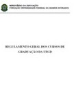
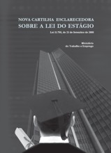
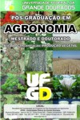

Biblioteca | UFGDNet | SCA | Webmail
Disciplinas Ministradas na Graduação
Algoritmos e Programação Aplicada à Engenharia Agrícola  Regulamento da Graduação  Lei do Estágio Armazenamento de Grãos Elementos de Máquinas Agrícolas Engenharia de Sistemas Agrícolas Ergonomia em Máquinas Agrícolas Mecanização Agrícola Mecanização Zootécnica Métodos Numéricos para Engenharia Projeto de Máquinas Agrícolas Trabalho de Conclusão de Curso (orientação) Estágio Curricular Supervisionado (supervisão) Disciplinas Ministradas na Pós-Graduação ::: Mestrado em Engenharia Agrícola - Engenharia de Sistemas Agrícolas Otimização ::: Doutorado em Agronomia - Produção Vegetal Energia da Biomassa  Norma de Tese Secagem e Aeração de Grãos Otimização de Sistemas Agrícolas e Agropecuários Uso Eficiente da Maquinaria Agrícola na Produção Vegetal ::: Mestrado em Zootecnia - Produção Animal Otimização Aplicada à Agropecuária
Algoritmos e Programação Aplicada à Engenharia Agrícola
 Regulamento da Graduação

 Lei do Estágio

Armazenamento de Grãos
Elementos de Máquinas Agrícolas
Engenharia de Sistemas Agrícolas
Ergonomia em Máquinas Agrícolas
Mecanização Agrícola
Mecanização Zootécnica
Métodos Numéricos para Engenharia
Projeto de Máquinas Agrícolas
Trabalho de Conclusão de Curso (orientação)
Estágio Curricular Supervisionado (supervisão)
Disciplinas Ministradas na Pós-Graduação
::: Mestrado em Engenharia Agrícola - Engenharia de Sistemas Agrícolas
Otimização
::: Doutorado em Agronomia - Produção Vegetal
Energia da Biomassa

Secagem e Aeração de Grãos
::: Mestrado em Zootecnia - Produção Animal
Copyright © 2005 - 2012 Cristiano Marcio
R. João Rosa Goes 1761, Dourado, MS, CEP 79.825-070
Universidade Federal da Grande Dourados Faculdade de Ciências Agrárias
Grupo de Pesquisa e Desenvolvimento Tecnológico Engenharia de Sistemas Agrícolas Mecanizados